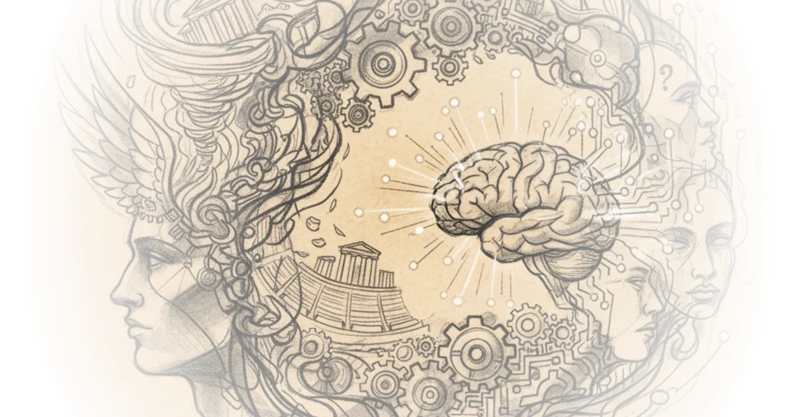

Most people assume genius is a static, biological trait—a rare spark of lightning that strikes a single individual. Yale University challenges this deeply held belief, arguing instead that our definition of genius is a fluid construct that shifts to meet the specific spiritual, social, and economic needs of each historical era. This is not merely a history lesson; it is a reframing of how we value human potential today, suggesting that the "lone genius" is a myth we created during the Enlightenment and are now actively dismantling.
From Guardian Spirits to Divine Architects
Yale University begins by tracing the etymology of the word itself, revealing that the modern concept is a far cry from its ancient roots. "Our term genius it turns out is an ancient word... the origins of the concept go back to Classical Greece and Rome," the lecture explains. In antiquity, genius was not an internal quality but an external force, a "guardian spirit with a special characteristic or innate ability that comes forth at one's birth." This framing is crucial because it removes the burden of creation from the individual; the genius was a vessel, not the source.

As the narrative moves into the Middle Ages, Yale University notes a significant pivot where the "lights did not go out," but the source of inspiration changed. The concept was "taken over and repurposed by the church," shifting from a personal spirit to a divine mandate. The lecture observes that in this era, "God animated his Earthly emissaries by means of a Divine Spirit or Divine afflatus," resulting in masterpieces like the Gothic Cathedrals. Here, the argument holds up remarkably well: the anonymity of the architects and craftsmen of Chartres Cathedral proves that the culture did not value the individual ego, but rather the divine connection. The creator was invisible; the miracle was the point.
"God withdrew leaving the individual as the lone possessor of genius. Genius is now wholly imminent it comes with birth inside the individual and there it remains."
The Secularization of Brilliance
The turning point arrives with the Enlightenment, where the lecture argues that "God and genius part company." Yale University describes this as a moment when science replaced superstition, and national governments assumed authority from the church. The definition narrowed to John Milton's 1649 description: "Genius is a natural ability or capacity quality of mind the special endowments which fit a man for his peculiar work." This shift is profound because it secularizes the sacred, turning a spiritual gift into a biological one. The evidence provided is the transformation of burial sites like Westminster Abbey and the Pantheon, where saints were replaced by secular figures like Isaac Newton and Voltaire. These locations became "Halls of Fame" for human accomplishment rather than religious devotion.
Critics might note that this transition was not as clean or universal as the timeline suggests; many Enlightenment thinkers still relied heavily on religious frameworks, and the "secularization" of genius often excluded women and minorities who were denied the label regardless of their output. However, the core observation remains valid: the cultural narrative shifted to celebrate the individual as the sole originator of ideas.
The Romantic Myth and the Modern Reality
Perhaps the most striking evolution Yale University identifies is the change in the "attire" of the genius. The lecture contrasts the "neat proper portraits" of the 18th century with the "disheveled look" of the 19th-century Romantics. The archetype shifted to the "eccentric misfit capable of sudden brilliant ideas but who suffers for their art," with Ludwig van Beethoven serving as the primary model. This cultural shift linked genius closely with insanity, a trope that Hollywood continues to exploit. The argument here is that we romanticized the struggle of creation, creating a "Dark Side of genius" that persists in our pop culture.
However, the lecture pivots sharply to the modern era, dismantling the romantic myth with the rise of the research lab. Yale University points out that the invention of the light bulb, often attributed to a solitary Thomas Edison, actually emerged from a team of "about two dozen lab technicians." The scale of modern innovation has exploded, with companies like ASML employing 28,000 people to build the machines that make computer chips. The lecture concludes that "the research team seems to have replaced the solitary genius." This is a powerful counter-narrative to the "lone wolf" myth, suggesting that today's breakthroughs are collective achievements.
"The genius is a guardian Spirit a god a saint an individual human or a team of humans One race or all Races genius seems to be whatever the moment in history requires."
The Changing Face of Recognition
Finally, Yale University addresses the demographic transformation of genius. The lecture notes that the "all-whites boys club" of previous centuries is being replaced by a recognition of "transformative acts by women genius" and figures from diverse racial backgrounds. This is not just about correcting the historical record but about acknowledging that the "face of genius has changed" to include those previously silenced. The inclusion of figures like Marie Curie, Josephine Baker, and the Brontë sisters in the modern canon reflects a societal shift toward a more inclusive definition of excellence.
Bottom Line
Yale University's strongest argument is that genius is not a fixed biological fact but a mirror of our own cultural values, shifting from a divine spirit to a solitary rebel, and finally to a collaborative team. The piece's greatest vulnerability is its reliance on a linear progression that may oversimplify the messy, overlapping realities of history, yet the core insight remains undeniable: our definition of genius is always a reflection of what we, as a society, need it to be. As the lecture concludes, the only absolute in the history of genius is change itself.